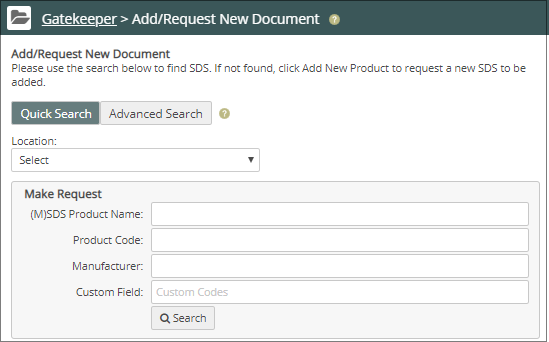
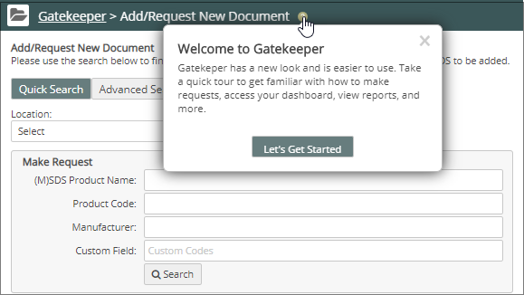
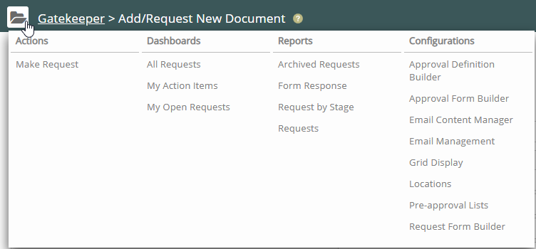

Use the Product Menu button ( ) to switch to the Gatekeeper dashboard. The Gatekeeper Search page is displayed by default. You can begin searching immediately using the Quick Search or click Advanced Search for a more extensive search. For more about searching, see Make a Request.

Click the help icons ( ) to see additional "show me" help.

Gatekeeper Navigation Pane
Click the Gatekeeper Main Menu icon ( ) to see the Gatekeeper navigation pane.

From the Gatekeeper dashboard, you can also navigate to the following features:
Actions—Make a product request.
Dashboards—View your current product requests or view requests that require your action.
Reports—Generate reports to view your requests, your requests according to their approval stage(s), and the responses that product requestors provided to your questions.
Configurations—Access form builders and manage the approval process.
 ) to switch to the Gatekeeper dashboard. The Gatekeeper Search page is displayed by default. You can begin searching immediately using the Quick Search or click Advanced Search for a more extensive search. For more about searching, see Make a Request.
) to switch to the Gatekeeper dashboard. The Gatekeeper Search page is displayed by default. You can begin searching immediately using the Quick Search or click Advanced Search for a more extensive search. For more about searching, see Make a Request. ) to see the Gatekeeper navigation pane.
) to see the Gatekeeper navigation pane.